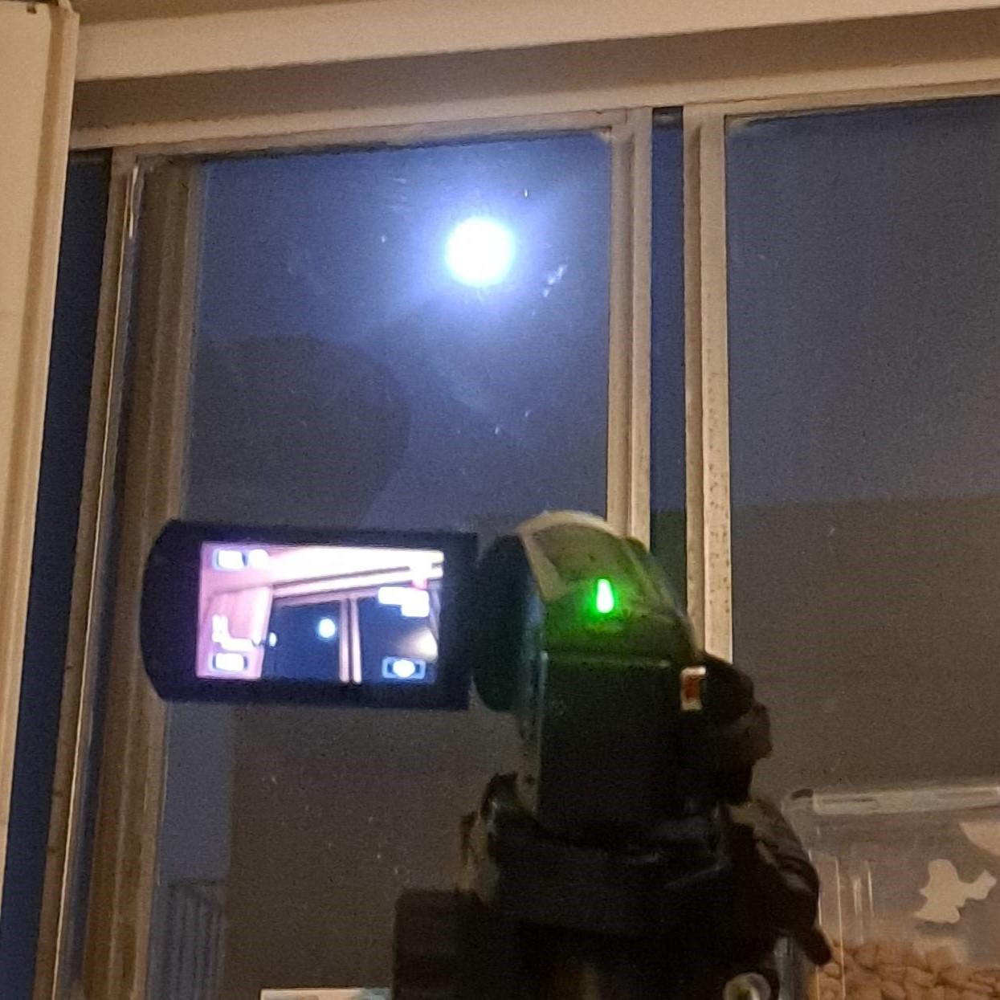

চাঁদ হলো জোয়ারভাটায় আবদ্ধ ২১৬০ মাইল ব্যাসের একটি বস্তু যা প্রতি ২৯.৫ দিনে একবার পৃথিবী গ্রহকে প্রদক্ষিণ করে। এর ভর পৃথিবীর ১% এরও বেশি এবং পৃথিবীর একমাত্র প্রাকৃতিক উপগ্রহ। এটি প্রায় ২,৫০,০০০ মাইল বলে জানা গেছে। পৃথিবীর বেশিরভাগ স্থান থেকে এটি দৃশ্যমান। এর কোন বায়ুমণ্ডল নেই এবং এর কারণ প্রায়শই ভূ-তাপীয় কার্যকলাপ/সলিডিফাইড ম্যান্টল এবং কোরের অভাব বলে ধরে নেওয়া হয়। এটিই সবচেয়ে দূরবর্তী স্থান যেখানে মানুষ পরিচালিত মিশনগুলি এখন পর্যন্ত গেছে, এবং তারপরেও, মানুষ পৃষ্ঠের একটি ন্যূনতম অংশ অন্বেষণ করেছে। পৃথিবীর সমুদ্রে জোয়ারভাটা হওয়ার অন্যতম কারণ হল এই বস্তু। ধারণা করা হয় যে এটি আদিম পৃথিবী এবং পৃথিবীর তুলনায় উল্লেখযোগ্য আকারের একটি গ্রহের সংঘর্ষের ফলে তৈরি হয়েছিল, যার ফলে বলয়গুলি অবশেষে চাঁদে একত্রিত হয়েছিল।
The purpose of this page is to collect and post pictures of the moon. Due to limitations, the pictures are not of the highest quality. The pictures are still being posted due to the quality not being the white blob that one is able to photograph using a cell phone from Earth. It is a level between Semi-professional/hobbyist quality photos and the common white object photos that the common cell phone is able to capture. 